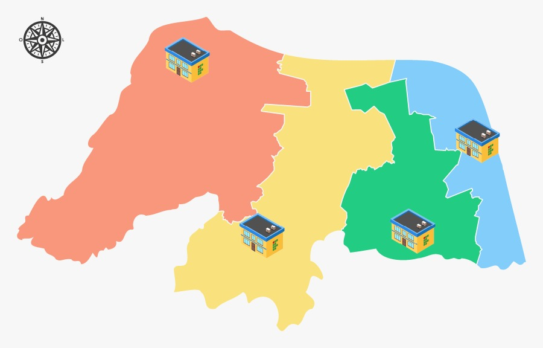
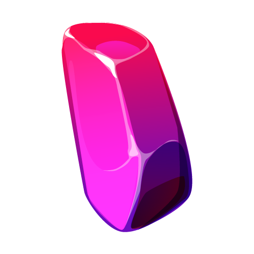

🎨 Galeria de Design e Telas Originais
Confira os esboços de design originais que serviram de inspiração para a gamificação:

Protótipo de Barra de Progresso
Esboço inicial de interface para o Moodle.

Esboço do Mapa
Conceito inicial de mapa de visitações.

Pedra de Matemática
Arte gráfica inicial da pedra fundamental.
👩🏫 Como Trocar para o Novo Módulo na sua Sala?
- Remova o bloco
block_multiprogressda barra lateral da sua sala virtual Moodle. - Clique em "Adicionar uma atividade ou recurso".
- Selecione o novo módulo Multi Progress ProITEC e adicione no tópico desejado!